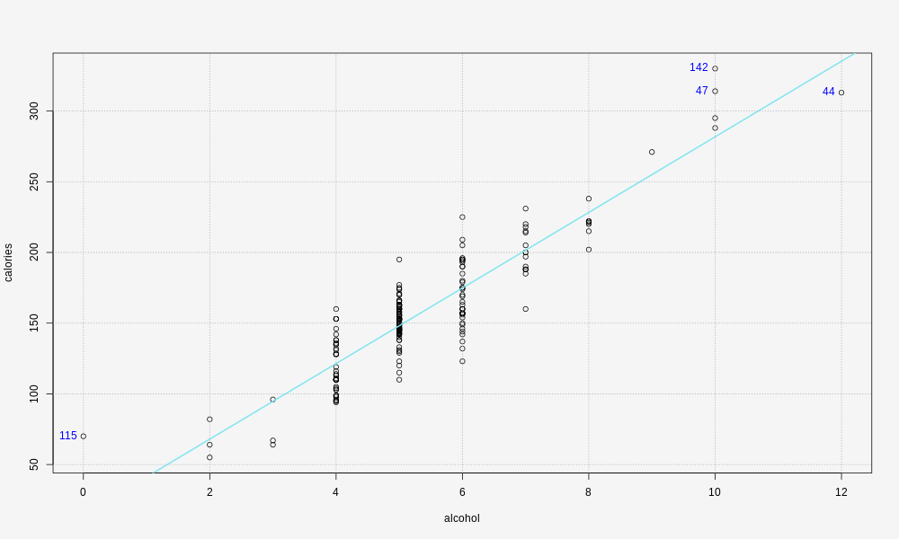

Data and Model Summary
| Number of cases used in the analysis | 227 |
| Number of incomplete (omitted) cases | 0 |
| Pearson Correlation Coefficient (r) | 0.9035659 |
| Coefficient of Determination (R-Squared) | 0.8164314 |
| Equation of Least Squares Line | calories = 14.527111 + 2672.3588 * alcohol |
Response Versus Numerical Predictor
Least Squares Line: calories = 14.527111 + 2672.3588 * alcohol

Residual Versus Fit
Least Squares Line: calories = 14.527111 + 2672.3588 * alcohol

Normal Probability Plot: Residuals
Least Squares Line: calories = 14.527111 + 2672.3588 * alcohol